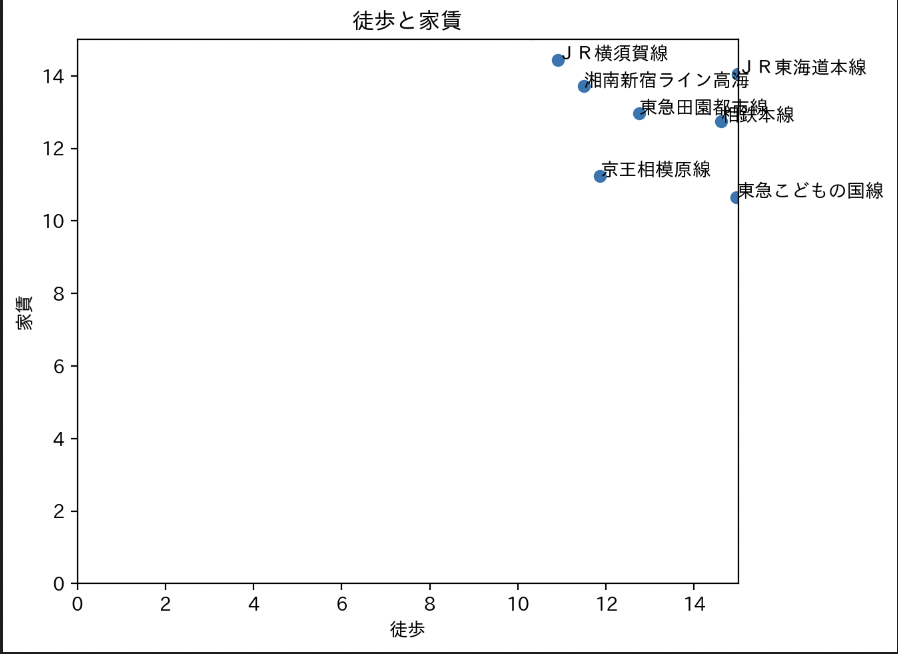

神大生におすすめの駅について
ターゲット設定
春から家族3人で引っ越してくる神大生
私たちの班は、3人家族という設定から3LDKという条件を定めた。
家賃は15万円以内とする。
駅の選択過程
まずは3LDKしかヒットしないように工夫しなければならない。
上記のコマンドを使用することで、3LDKで縛ることに成功！
次に何で絞り込むかについて。
家族連れということを踏まえ、駅から家までの距離が短いと神大生以外の家族も時短になると考えた。
徒歩が少ない路線を調査！

家賃15万円以下の上位２路線に絞る！
通学時間の短縮のため、先ほど絞った２路線の中で合計時間が少ない駅を探してみる。
上記の結果からおすすめランキングは
1位 横浜駅
2位 武蔵小杉駅
3位 戸塚駅
という結果になった！